For those who love their furniture...
welcome to the world of DREAM INTERIORS!!
We are here to bring you the best furnitures from our very own GODREJ INTERIO. We take great pleasure in bringing you this wide range of Interiors keeping in view the current trends and your needs. Your products have been made with graet care to deliver the best performance.
Our motive is to help you plan your dream house with a beautiful interior. Our wide rande of furniture will help meet all your expectations. We have efficient people working with usto help you out in choosing the right furniture for your house.
Select from available range of furnitures.
Living room is a room in a residential house or apartment for relaxing and socializing. Living room may contain furnishings such as a sofa, chairs, occasional tables, coffee tables, bookshelves, electric lamps, rugs, or other furniture. 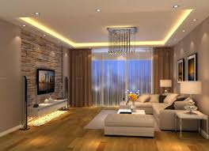 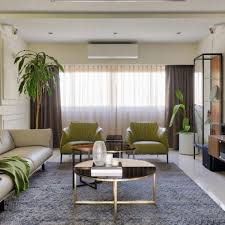
A dining room is a room for consuming food. Historically the dining room is furnished with a rather large dining table and a number of dining chairs; the most common shape is generally rectangular with two armed end chairs and an even number of un-armed side chairs along the long sides.
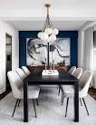
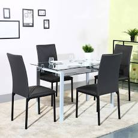
The bedroom is the perfect place at home for relaxation and rejuvenation. While designing and styling your bedroom, you need to keep a lot of things in mind, such as colour, soft furnishings, textures, flooring, furniture etc. All these elements can all be tailored according to your taste, allowing you to create the serene and tranquil haven in your abode.
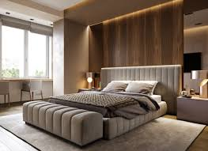
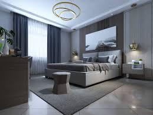
A study is a room in a house that is used for paperwork, computer work, or reading. Historically, the study of a house was reserved for use as the private office and reading room of a family father as the formal head of a household, but today studies are generally either used to operate a home business or else open to the whole family.
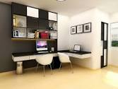
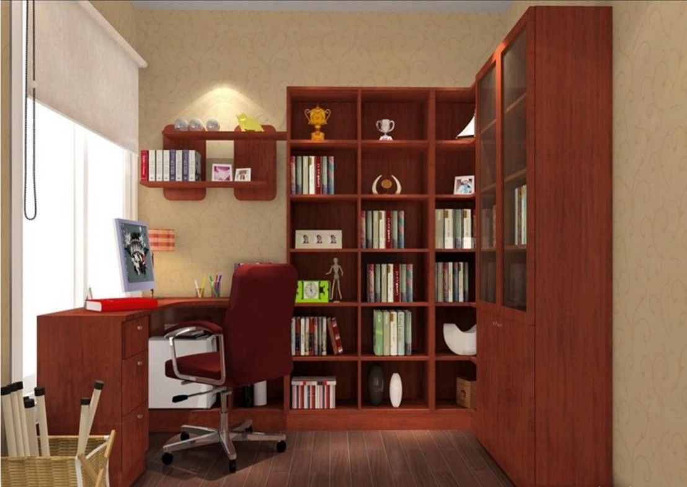
Kid's Bed rooms designed with parents in mind. Various options showing images of childrens furniture like bunk beds, twin beds, are covered in this. It gives your children immense pleasure in having their very oen customized rooms with all facilities and comforts.
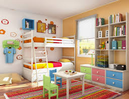
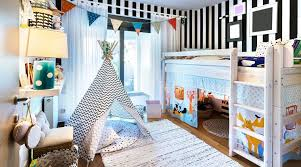
Modular Kitchen is a term used for the modern kitchen furniture layout consisting of modules of cabinets made of diversified materials which hold accessories inside, which can facilitate the effective usage of the spaces in a kitchen. These parts are fitted together to create a whole, functional kitchen design.
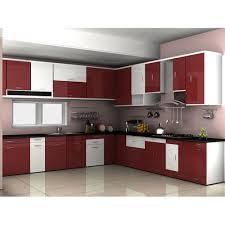
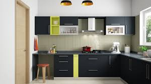